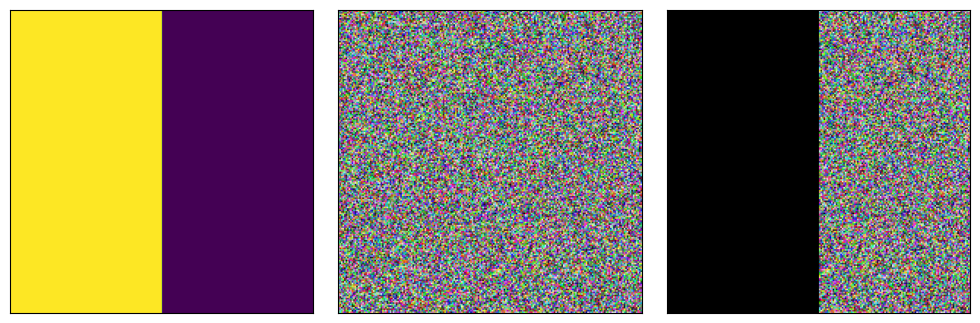
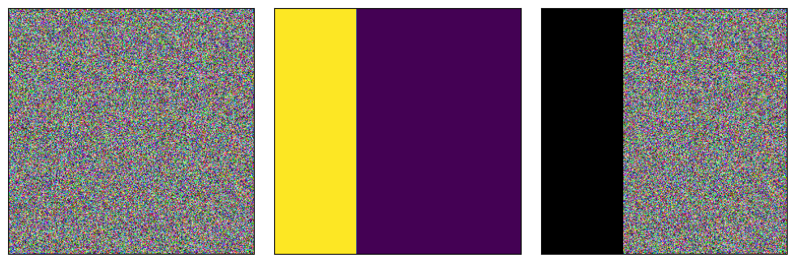

import torch
from torchvision.transforms import Normalize, ToPILImage, Resize
from tips.plot import plot_pil_imagesTensor
x = torch.randn([1,256,256])
x = x.squeeze()
x.shapetorch.Size([256, 256])x = torch.randn([3,256,256])
x.shapetorch.Size([3, 256, 256])torch.unsqueeze(x, 0).shapetorch.Size([1, 3, 256, 256])x.flatten(1,2).shapetorch.Size([3, 65536])x.flatten(1,2).mean(axis=1).shapetorch.Size([3])x = torch.randn([1,256,256])
x.transpose(0,1).shapetorch.Size([256, 1, 256])torch.manual_seed(12)
x = torch.randn([1,3])
x.max(), x.argmax()(tensor(-0.0546), tensor(2))cat vs stack
assert (torch.Tensor([1,2,3]) == torch.tensor([1,2,3])).all()a = torch.Tensor([1])
b = torch.Tensor([2])
torch.cat([a,b], dim=0)tensor([1., 2.])torch.stack([a,b], dim=0)tensor([[1.],
[2.]])torch.stack([a,b], dim=1)tensor([[1., 2.]])Element size
a.nelement()1a.element_size() # in bytes4Total memory allocation:
a.nelement() * a.element_size()4Resize tensor
x = torch.randn([3,256,256])
x1 = Resize([100, 100])(x)
x1.shapetorch.Size([3, 100, 100])Inverse Normalizer
new_x = (x - mean) / std
x = new_x * std + mean
x = (new_x + mean/std) * std
x = (new_x - mean/std) / (1/std)
inv_std = 1/(std + epsilon)
inv_mean = -mean/std = mean*inv_stdclass InverseNormalize(Normalize):
"""
Undoes the normalization and returns the reconstructed images in the input domain.
"""
def __init__(self, normalizer):
mean = normalizer.mean
std = normalizer.std
std_inv = 1 / (std + 1e-7)
mean_inv = -mean * std_inv
super().__init__(mean=mean_inv, std=std_inv)
def __call__(self, tensor):
return super().__call__(tensor.clone())normalizer = Normalize(mean=torch.Tensor([0.1902, 0.2077, 0.1599]), std=torch.Tensor([0.1060, 0.1060, 0.1071]))normalizer.meantensor([0.1902, 0.2077, 0.1599])inv_normalizer = InverseNormalize(normalizer)inv_normalizerInverseNormalize(mean=tensor([-1.7943, -1.9594, -1.4930]), std=tensor([9.4340, 9.4340, 9.3371]))torch.manual_seed(12)
a = torch.randn(3,2,2)
atensor([[[-0.2138, -1.3780],
[-0.0546, 0.4515]],
[[ 0.7858, -1.0884],
[-0.5599, -0.9336]],
[[ 0.0479, -0.0844],
[-0.1471, 0.7590]]])normalizer(a)tensor([[[ -3.8115, -14.7940],
[ -2.3096, 2.4655]],
[[ 5.4541, -12.2277],
[ -7.2413, -10.7672]],
[[ -1.0455, -2.2806],
[ -2.8660, 5.5942]]])inv_normalizer(normalizer(a))tensor([[[-0.2138, -1.3780],
[-0.0546, 0.4515]],
[[ 0.7858, -1.0884],
[-0.5599, -0.9336]],
[[ 0.0479, -0.0844],
[-0.1471, 0.7590]]])assert (inv_normalizer(normalizer(a)) - a < 10e-7).all()Masking via masked_fill
torch.manual_seed(12)
N = 200
a = torch.rand(3,N,N)
b = torch.cat([torch.ones(N,N//2), torch.zeros(N,N//2)], dim=1).long()
_ = plot_pil_images([ToPILImage()(b.float()), ToPILImage()(a), ToPILImage()(a.masked_fill_(b, 0))])
note that shape of a is {{a.shape}} and shape of b is {{b.shape}} so b was broadcasted in a.masked_fill_(b, 0).
masked_fill works similar in 4 dimensions:
torch.manual_seed(12)
N = 300
a = torch.rand(2,3,N,N)
b1 = torch.cat([torch.ones(N,N//2), torch.zeros(N,N//2)], dim=1).long()
b2 = torch.cat([torch.ones(N,N//3), torch.zeros(N,2*N//3)], dim=1).long()
b = torch.stack([b1,b2])
print(b.shape)
print(a.shape)
b = b.unsqueeze(axis=1) # this adds channel dimension = 1 that is needed for masked_fill
print(b.shape)
c = a.masked_fill(b, 0)
print(c.shape)
for i in range(2):
_ = plot_pil_images([ToPILImage()(a[i,:,:,:]),
ToPILImage()(b[i,:,:,:].float()),
ToPILImage()(c[i,:,:,:])])torch.Size([2, 300, 300])
torch.Size([2, 3, 300, 300])
torch.Size([2, 1, 300, 300])
torch.Size([2, 3, 300, 300])

Note that we had to add unsqueeze for b to achieve proper broadcasting.
Masked mean and stdev
This is rather useless since final normalization results tend to be similar. Keeping it here in case I need it in the future.
Sometimes we don’t want the mean of the whole image but only of the non-zero values. For that we need to find limit the array to non zero values first then find the mean and stdev. Let’s do this for one image then extend to 3 channels, and finally for a full batch:
n_images = 10
n_channels = 3
imgs = torch.randn([n_images, n_channels, 100,100])Let’s first flatten tensor:
flatten_imgs = imgs.flatten(2,3)
flatten_imgs.shapetorch.Size([10, 3, 10000])For one image, one channel:
array = flatten_imgs[0,0,:]array = array[array > 0]
array.mean(), array.std()(tensor(0.7873), tensor(0.6029))For one image, all three channels:
array = flatten_imgs[0,:,:]means_per_channel = torch.zeros(n_channels)
stdevs_per_channel = torch.zeros(n_channels)
for i in range(n_channels):
array_per_channel = array[i, :]
array_per_channel = array_per_channel[array_per_channel>0]
means_per_channel[i] = array_per_channel.mean()
stdevs_per_channel[i] = array_per_channel.std()
means_per_channel, stdevs_per_channel(tensor([0.7873, 0.8032, 0.7925]), tensor([0.6029, 0.5983, 0.5995]))And now for the whole tensor:
means_per_image_per_channel = torch.zeros(n_images, n_channels)
stdevs_per_image_per_channel = torch.zeros(n_images, n_channels)
for i in range(n_images):
for j in range(n_channels):
array_per_image_per_channel = flatten_imgs[i, j, :]
array_per_image_per_channel = array_per_image_per_channel[array_per_image_per_channel>0]
means_per_image_per_channel[i,j] = array_per_image_per_channel.mean()
stdevs_per_image_per_channel[i,j] = array_per_image_per_channel.std()
means_per_image_per_channel, stdevs_per_image_per_channel(tensor([[0.7873, 0.8032, 0.7925],
[0.7860, 0.7971, 0.8038],
[0.7988, 0.8052, 0.8056],
[0.7989, 0.8025, 0.7976],
[0.7914, 0.7798, 0.7897],
[0.7992, 0.8158, 0.7668],
[0.8038, 0.7937, 0.7977],
[0.7868, 0.7956, 0.8038],
[0.7891, 0.8032, 0.7991],
[0.7872, 0.8016, 0.8135]]),
tensor([[0.6029, 0.5983, 0.5995],
[0.5981, 0.5994, 0.6075],
[0.6066, 0.6124, 0.6055],
[0.6031, 0.5922, 0.6137],
[0.5902, 0.6009, 0.6004],
[0.6131, 0.6234, 0.5902],
[0.6138, 0.6055, 0.6082],
[0.5974, 0.5982, 0.6019],
[0.6044, 0.6084, 0.6079],
[0.5932, 0.6091, 0.6187]]))